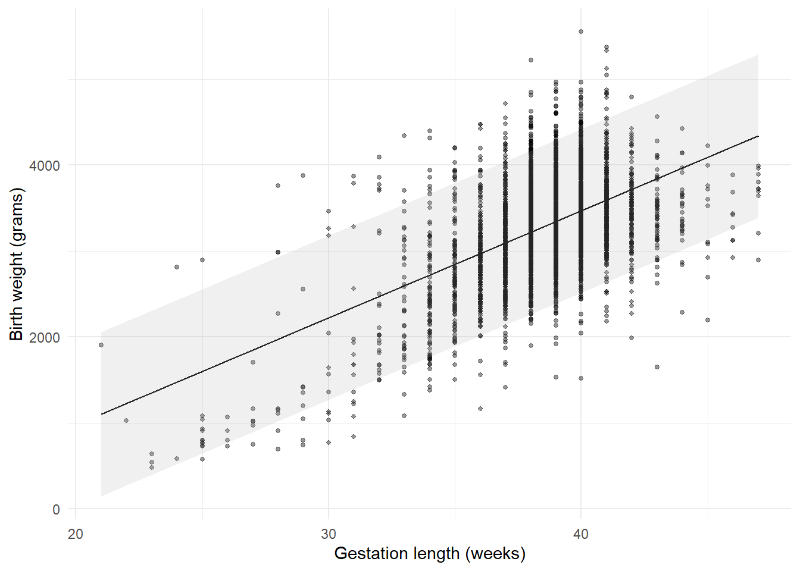
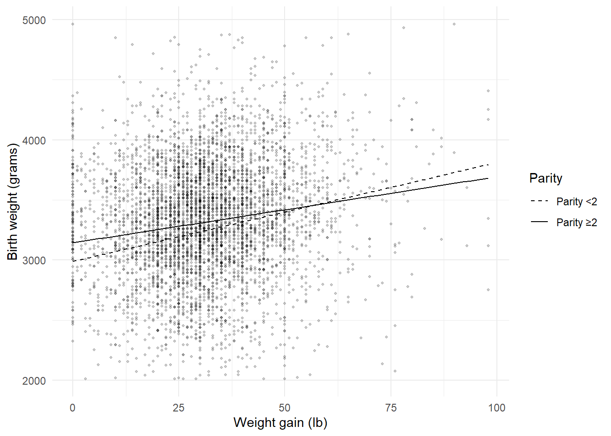
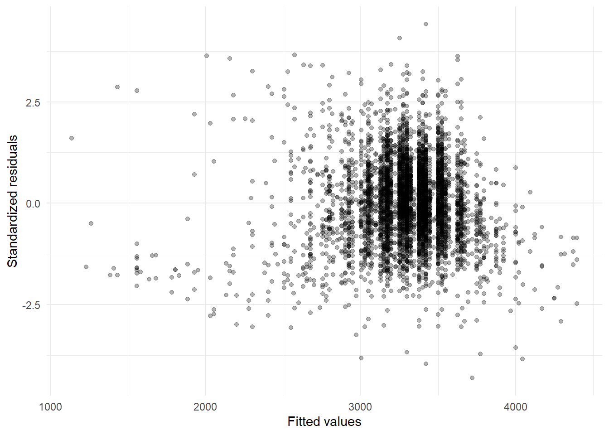
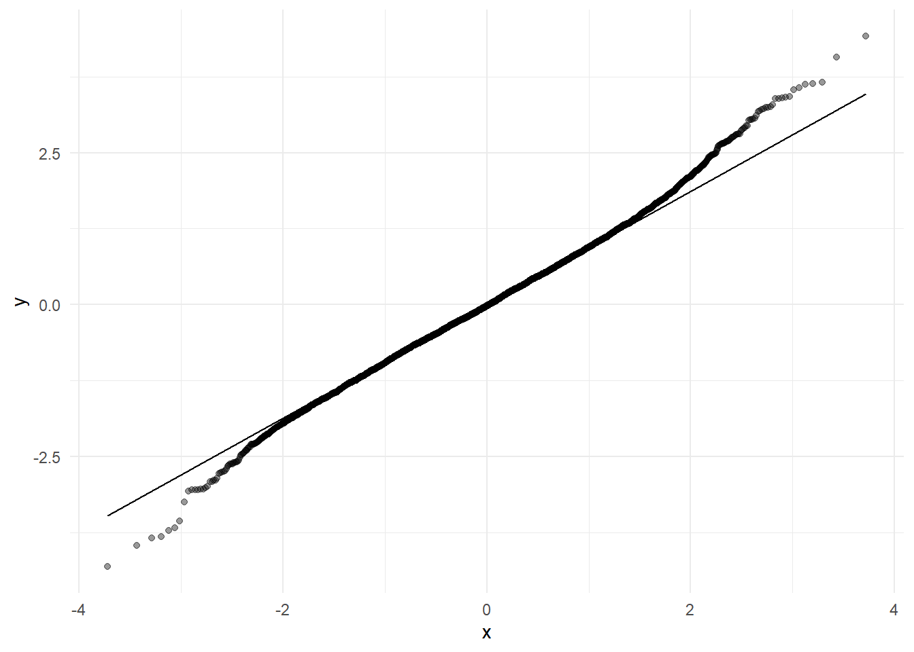
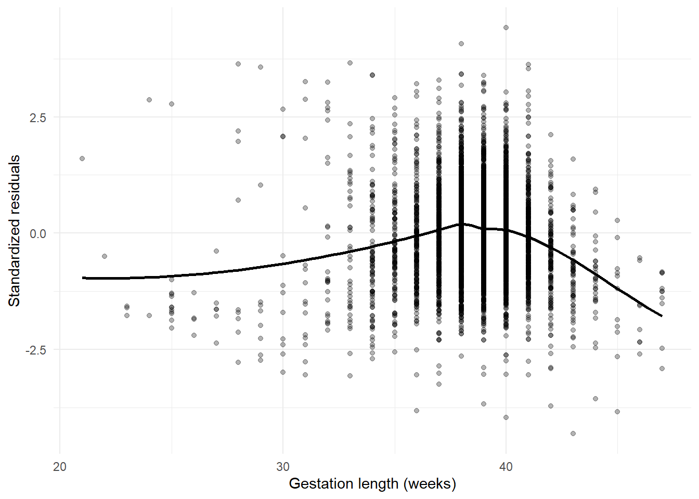
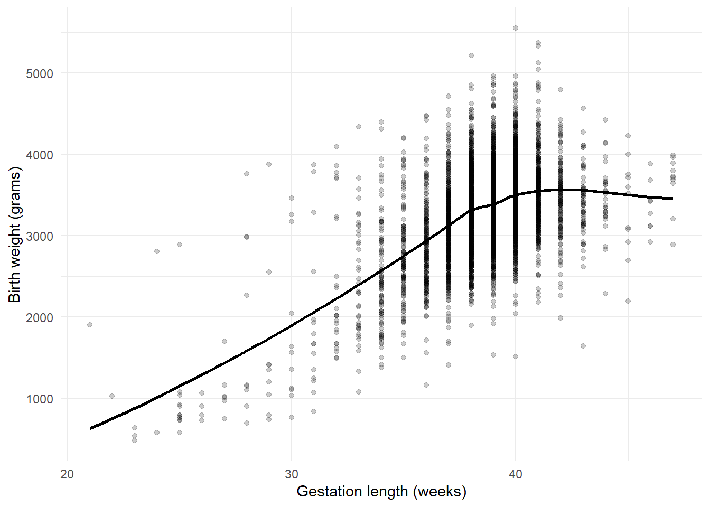
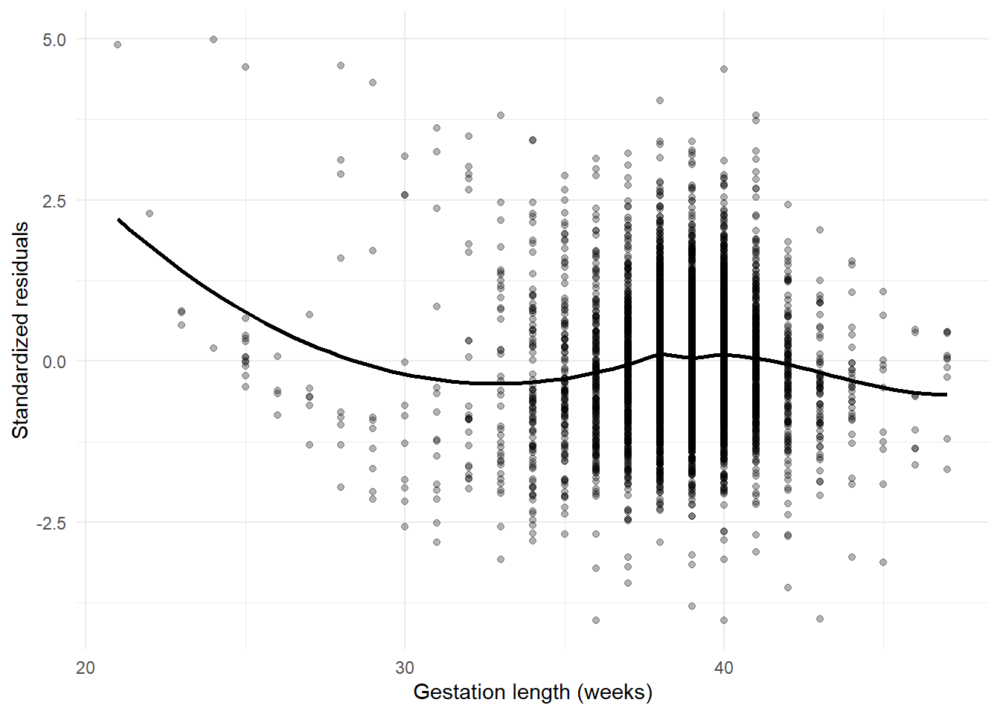
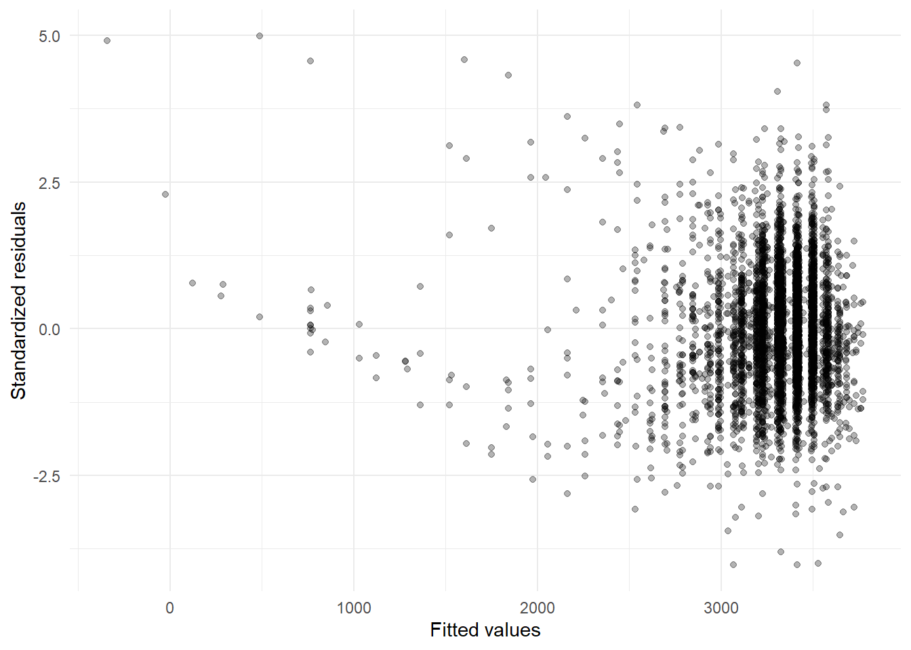
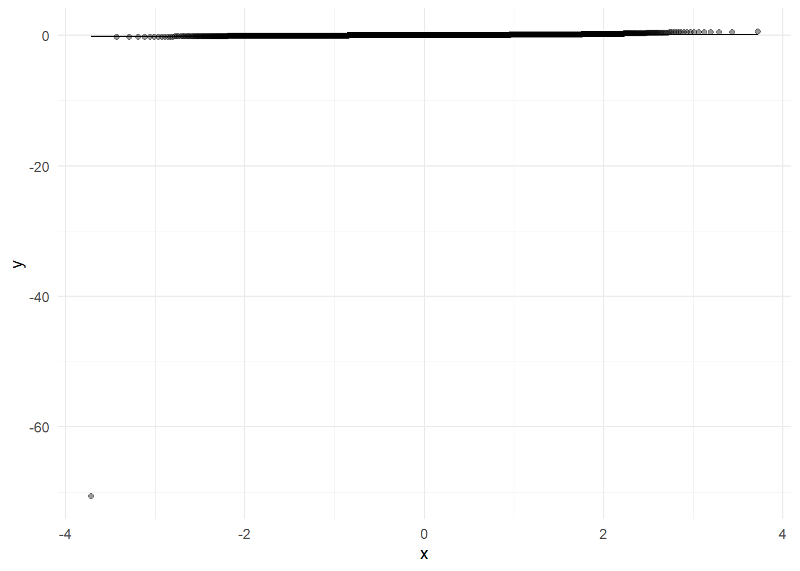

library(dplyr)
library(tidyr)
library(haven)
library(forcats)
library(ggplot2)
library(broom)
library(car)
library(lmtest)
library(sandwich)
library(MASS)
library(purrr)
library(glue)
data_dir <- file.path("..", "mer_data_stata")
bw5k <- read_dta(file.path(data_dir, "bw5k.dta")) |>
mutate(
across(where(haven::is.labelled), haven::as_factor),
multbrth = fct_relevel(multbrth, "single")
)10 SME Chapter 9: Linear Regression
Note
This chapter reproduces and expands upon the analyses from the original Methods in Epidemiologic Research (MER) Chapter 14 (Dohoo, Martin, & Stryhn, 2012) using R with data sourced from ../mer_data_stata/bw5k.dta. The chapter covers linear regression - a fundamental method for analyzing continuous outcomes in epidemiology.
10.1 Replication Notes
- Data dependencies:
../mer_data_stata/bw5k.dta. - Required R packages:
dplyr,tidyr,haven,forcats,ggplot2,broom,car,lmtest,sandwich,MASS,purrr,glue. - Setup tips: Install with
install.packages(c("dplyr","tidyr","haven","forcats","ggplot2","broom","car","lmtest","sandwich","MASS","purrr","glue"))prior to running. - Execution: Knit or execute interactively; diagnostic plots and models are regenerated from the source data each run.
10.2 Theoretical Background
Understanding Linear Regression
Before we fit regression models, let’s understand what regression does and why it’s useful. Linear regression is one of the most widely used statistical methods in epidemiology (Dohoo, Martin, & Stryhn, 2012; Kirkwood & Sterne, 2003; Rothman, Huybrechts, & Murray, 2024):
10.2.1 What is Regression?
Regression is a way to find relationships between variables. It’s like drawing the “best fit” line through a scatter plot of data points.
Simple example: If you plot birth weight (y-axis) against gestation length (x-axis), regression finds the line that best describes how birth weight increases as gestation length increases.
10.2.2 Key Concepts
10.2.3 1. The Regression Line
The regression line is the “best fit” line through your data. It minimizes the distance from all points to the line. Think of it like finding the line that comes closest to all your data points.
Equation: y = a + bx - a (intercept): Where the line crosses the y-axis (the value when x = 0) - b (slope): How much y changes for each unit increase in x
10.2.4 2. Multiple Regression
When you have more than one predictor, it’s called multiple regression. Like asking: “How do gestation length AND smoking affect birth weight?”
Why it’s useful: It lets you see the effect of one variable while “controlling for” others. Like asking: “Does smoking affect birth weight, even after accounting for gestation length?”
10.2.5 3. Assumptions
Regression makes some assumptions: - Linearity: The relationship is a straight line (not curved) - Independence: Observations are independent (one person’s data doesn’t affect another’s) - Homoscedasticity: The variability is similar across all values of x - Normality: The errors (differences between observed and predicted) are normally distributed
10.2.6 4. Model Diagnostics
We check if our model is good by looking at: - Residuals: The differences between observed and predicted values (should be random) - R-squared: How much of the variation in y is explained by x (like a “goodness of fit” measure) - P-values: Whether the relationships are statistically significant
10.2.7 Why Regression is Powerful
Regression helps us: 1. Predict: Estimate outcomes for new cases 2. Understand: See which factors matter most 3. Control: Account for confounding variables 4. Quantify: Measure how much each factor affects the outcome
10.2.8 Common Issues
- Collinearity: When predictors are highly correlated (like height and weight), it’s hard to separate their effects
- Outliers: Extreme values can pull the line in their direction
- Non-linearity: If the relationship is curved, a straight line won’t fit well
In simple terms: Linear regression finds the best straight line through your data. It tells you how one variable (or several) relates to another. It’s like finding the pattern in your data - the line that best describes how things change together. We use it to predict, understand relationships, and control for other factors.
10.3 Setup
What is this section doing?
This section loads and prepares data for linear regression analysis. Think of it like getting ready to find relationships between variables:
- Loading tools: Getting R packages for regression analysis
- Reading data: Opening the birth weight dataset
- Data cleaning: Converting labels to factors and organizing the data
In simple terms: We’re preparing to answer questions like “how does birth weight relate to gestation length?” or “does smoking affect birth weight?”
10.4 Exercises 14.1–14.2: Simple Linear Regressions
What is this section doing?
This section fits simple linear regression models - finding the “best fit” line through data. Think of it like drawing a line through a scatter plot:
- Simple regression: One predictor variable (like “how does gestation length predict birth weight?”)
- Regression line: The line that best fits the data (minimizes the distance from all points)
- Coefficients: The slope (how much birth weight changes per week of gestation) and intercept (expected birth weight at zero weeks)
In simple terms: We’re finding the relationship between two variables. The regression line tells us “on average, for each week of gestation, birth weight increases by X grams.”
lm_gest <- lm(bwt ~ gest, data = bw5k)
lm_mult <- lm(bwt ~ multbrth, data = bw5k)
summary(lm_gest)
Call:
lm(formula = bwt ~ gest, data = bw5k)
Residuals:
Min 1Q Median 3Q Max
-2195.08 -311.12 -6.62 304.38 2084.38
Coefficients:
Estimate Std. Error t value Pr(>|t|)
(Intercept) -1513.854 113.868 -13.29 <2e-16 ***
gest 124.487 2.942 42.31 <2e-16 ***
---
Signif. codes: 0 '***' 0.001 '**' 0.01 '*' 0.05 '.' 0.1 ' ' 1
Residual standard error: 485.6 on 4998 degrees of freedom
Multiple R-squared: 0.2637, Adjusted R-squared: 0.2636
F-statistic: 1790 on 1 and 4998 DF, p-value: < 2.2e-16summary(lm_mult)
Call:
lm(formula = bwt ~ multbrth, data = bw5k)
Residuals:
Min 1Q Median 3Q Max
-2791.61 -273.61 25.89 330.39 2220.39
Coefficients:
Estimate Std. Error t value Pr(>|t|)
(Intercept) 3329.614 7.744 429.97 <2e-16 ***
multbrth2+ -943.675 40.478 -23.31 <2e-16 ***
---
Signif. codes: 0 '***' 0.001 '**' 0.01 '*' 0.05 '.' 0.1 ' ' 1
Residual standard error: 537.5 on 4998 degrees of freedom
Multiple R-squared: 0.09808, Adjusted R-squared: 0.0979
F-statistic: 543.5 on 1 and 4998 DF, p-value: < 2.2e-16gest_grid <- tibble(gest = bw5k$gest)
gest_pred <- predict(lm_gest, newdata = gest_grid, interval = "prediction")
gest_plot <- gest_grid |>
mutate(
.fitted = gest_pred[, "fit"],
.lwr = gest_pred[, "lwr"],
.upr = gest_pred[, "upr"],
bwt = bw5k$bwt
)
ggplot(gest_plot, aes(x = gest, y = .fitted)) +
geom_point(aes(y = bwt), alpha = 0.4, size = 1) +
geom_line(colour = "black") +
geom_ribbon(aes(ymin = .lwr, ymax = .upr), alpha = 0.2, fill = "grey70") +
labs(
x = "Gestation length (weeks)",
y = "Birth weight (grams)"
) +
theme_minimal()
10.5 Exercise 14.3: Multiple Predictors and F-test
What is this section doing?
This section fits models with multiple predictors and tests if they’re useful. Think of it like adding more variables to explain birth weight:
- Multiple regression: Using several predictors at once (gestation + smoking variables)
- F-test: Tests if the model with all predictors is better than a model with none (like asking “do these variables help explain birth weight?”)
- Model comparison: We can see which predictors are most important
In simple terms: Instead of just looking at one factor, we’re looking at multiple factors together to see which ones matter for birth weight.
lm_cigs <- lm(bwt ~ gest + cig_1 + cig_2 + cig_3, data = bw5k)
anova(lm_cigs)Analysis of Variance Table
Response: bwt
Df Sum Sq Mean Sq F value Pr(>F)
gest 1 422130383 422130383 1805.5753 < 2.2e-16 ***
cig_1 1 9277504 9277504 39.6826 3.244e-10 ***
cig_2 1 1496355 1496355 6.4003 0.01144 *
cig_3 1 32682 32682 0.1398 0.70851
Residuals 4995 1167794726 233793
---
Signif. codes: 0 '***' 0.001 '**' 0.01 '*' 0.05 '.' 0.1 ' ' 110.6 Exercise 14.4: Scaling Predictors
What is this section doing?
This section rescales variables to make coefficients easier to interpret. Think of it like changing units:
- Centering: Subtracting a reference value (like measuring from 39 weeks instead of 0) makes the intercept more meaningful
- Scaling: Dividing by a number (like measuring in “20-cigarette units”) makes the coefficient easier to understand
In simple terms: We’re changing how we measure variables so the results are easier to interpret. Instead of “per week from 0”, we might say “per week from 39 weeks” which is more meaningful.
bw5k <- bw5k |>
mutate(
gest39 = gest - 39,
cig_2p = cig_2 / 20
)
summary(lm(bwt ~ gest39, data = bw5k))
Call:
lm(formula = bwt ~ gest39, data = bw5k)
Residuals:
Min 1Q Median 3Q Max
-2195.08 -311.12 -6.62 304.38 2084.38
Coefficients:
Estimate Std. Error t value Pr(>|t|)
(Intercept) 3341.136 6.953 480.51 <2e-16 ***
gest39 124.487 2.942 42.31 <2e-16 ***
---
Signif. codes: 0 '***' 0.001 '**' 0.01 '*' 0.05 '.' 0.1 ' ' 1
Residual standard error: 485.6 on 4998 degrees of freedom
Multiple R-squared: 0.2637, Adjusted R-squared: 0.2636
F-statistic: 1790 on 1 and 4998 DF, p-value: < 2.2e-16summary(lm(bwt ~ cig_2p, data = bw5k))
Call:
lm(formula = bwt ~ cig_2p, data = bw5k)
Residuals:
Min 1Q Median 3Q Max
-2766.13 -279.13 40.87 352.87 2245.87
Coefficients:
Estimate Std. Error t value Pr(>|t|)
(Intercept) 3304.132 8.184 403.710 < 2e-16 ***
cig_2p -243.774 48.539 -5.022 5.28e-07 ***
---
Signif. codes: 0 '***' 0.001 '**' 0.01 '*' 0.05 '.' 0.1 ' ' 1
Residual standard error: 564.5 on 4998 degrees of freedom
Multiple R-squared: 0.005021, Adjusted R-squared: 0.004822
F-statistic: 25.22 on 1 and 4998 DF, p-value: 5.285e-0710.7 Exercises 14.6–14.7: Indicator and Hierarchical Coding
bw5k <- bw5k |>
mutate(
meduc_c4 = fct_drop(meduc_c4)
)
lm_meduc_indicator <- lm(bwt ~ gest + meduc_c4, data = bw5k)
anova(lm_meduc_indicator)Analysis of Variance Table
Response: bwt
Df Sum Sq Mean Sq F value Pr(>F)
gest 1 422130383 422130383 1796.7899 < 2.2e-16 ***
meduc_c4 3 5096640 1698880 7.2312 7.717e-05 ***
Residuals 4995 1173504628 234936
---
Signif. codes: 0 '***' 0.001 '**' 0.01 '*' 0.05 '.' 0.1 ' ' 1contrasts(bw5k$meduc_c4) <- contr.sum(nlevels(bw5k$meduc_c4))
lm_meduc_hier <- lm(bwt ~ gest + meduc_c4, data = bw5k)
bind_rows(
tidy(lm_meduc_indicator) |> mutate(model = "Indicator (treatment)"),
tidy(lm_meduc_hier) |> mutate(model = "Hierarchical (sum contrasts)")
)# A tibble: 10 × 6
term estimate std.error statistic p.value model
<chr> <dbl> <dbl> <dbl> <dbl> <chr>
1 (Intercept) -1555. 114. -13.6 2.40e-41 Indicator (treatment)
2 gest 124. 2.94 42.3 0 Indicator (treatment)
3 meduc_c4hs dip 20.0 21.0 0.956 3.39e- 1 Indicator (treatment)
4 meduc_c4some col 53.3 21.9 2.43 1.50e- 2 Indicator (treatment)
5 meduc_c4univ deg 80.6 19.3 4.18 2.94e- 5 Indicator (treatment)
6 (Intercept) -1516. 114. -13.3 7.30e-40 Hierarchical (sum con…
7 gest 124. 2.94 42.3 0 Hierarchical (sum con…
8 meduc_c41 -38.5 13.1 -2.93 3.37e- 3 Hierarchical (sum con…
9 meduc_c42 -18.4 12.2 -1.51 1.30e- 1 Hierarchical (sum con…
10 meduc_c43 14.8 13.0 1.14 2.54e- 1 Hierarchical (sum con…contrasts(bw5k$meduc_c4) <- NULL10.8 Exercise 14.8: Collinearity and VIFs
lm_cig_only <- lm(bwt ~ cig_1 + cig_2 + cig_3, data = bw5k)
car::vif(lm_cig_only) cig_1 cig_2 cig_3
4.751123 13.604341 9.376576 lm_quadratic <- lm(bwt ~ gest + I(gest^2), data = bw5k)
car::vif(lm_quadratic) gest I(gest^2)
130.7588 130.7588 lm_quadratic_centered <- lm(bwt ~ gest39 + I(gest39^2), data = bw5k)
car::vif(lm_quadratic_centered) gest39 I(gest39^2)
1.536939 1.536939 10.9 Exercises 14.9–14.11: Interactions
bw5k <- bw5k |>
mutate(
wtgain_c2 = if_else(!is.na(wtgain), wtgain >= 30, NA),
tbo_c2 = if_else(!is.na(tbo), tbo >= 2, NA),
wtgain_ct = wtgain - 31
)
lm_two_binary <- lm(bwt ~ wtgain_c2 + tbo_c2, data = bw5k)
lm_inter_binary <- lm(bwt ~ wtgain_c2 * tbo_c2, data = bw5k)
car::vif(lm_inter_binary) wtgain_c2 tbo_c2 wtgain_c2:tbo_c2
3.214289 2.466766 4.230499 lm_mixed <- lm(bwt ~ tbo_c2 * wtgain_ct, data = bw5k)grid_data <- expand.grid(
wtgain = seq(min(bw5k$wtgain, na.rm = TRUE), max(bw5k$wtgain, na.rm = TRUE), length.out = 50),
tbo_c2 = c(FALSE, TRUE)
) |>
mutate(wtgain_ct = wtgain - 31)
grid_data$pred <- predict(lm_mixed, newdata = grid_data)
ggplot() +
geom_point(
data = bw5k |> filter(bwt >= 2000, bwt <= 5000),
aes(x = wtgain, y = bwt),
alpha = 0.2,
size = 0.8
) +
geom_line(
data = grid_data,
aes(x = wtgain, y = pred, linetype = tbo_c2),
colour = "black"
) +
scale_linetype_manual(values = c("dashed", "solid"), labels = c("Parity <2", "Parity ≥2")) +
labs(x = "Weight gain (lb)", y = "Birth weight (grams)", linetype = "Parity") +
theme_minimal()
lm_cont_inter <- lm(bwt ~ wtgain * tbo, data = bw5k)
margins_df <- expand.grid(
wtgain = c(0, 100),
tbo = 1:4
) |>
mutate(pred = predict(lm_cont_inter, newdata = data.frame(wtgain = wtgain, tbo = tbo)))
margins_df wtgain tbo pred
1 0 1 3031.830
2 100 1 3791.862
3 0 2 3077.643
4 100 2 3744.734
5 0 3 3123.455
6 100 3 3697.606
7 0 4 3169.268
8 100 4 3650.47910.10 Exercise 14.12: Multivariable Model
bw5k <- bw5k |>
mutate(
white = if_else(mrace_c3 == "white", 1, 0),
college = if_else(meduc_c4 %in% c("univ deg", "post grad"), 1, 0)
)
single_births <- bw5k |> filter(multbrth == "single")
lm_multivar <- lm(bwt ~ white + college + tbo + cig_2, data = single_births)
lm_white_int <- lm(bwt ~ factor(white) * cig_2 + college + tbo, data = single_births)
lm_tbo_int <- lm(bwt ~ factor(tbo) * cig_2 + college + white, data = single_births)
lm_college_int <- lm(bwt ~ factor(college) * cig_2 + white + tbo, data = single_births)
list(
base = tidy(lm_multivar),
white_interaction = tidy(lm_white_int),
tbo_interaction = tidy(lm_tbo_int),
college_interaction = tidy(lm_college_int),
summary_bwt = summary(single_births$bwt)
)$base
# A tibble: 5 × 5
term estimate std.error statistic p.value
<chr> <dbl> <dbl> <dbl> <dbl>
1 (Intercept) 3213. 17.9 179. 0
2 white 111. 16.2 6.87 7.38e-12
3 college 30.7 16.7 1.84 6.56e- 2
4 tbo 22.0 5.26 4.19 2.79e- 5
5 cig_2 -14.7 2.39 -6.15 8.36e-10
$white_interaction
# A tibble: 6 × 5
term estimate std.error statistic p.value
<chr> <dbl> <dbl> <dbl> <dbl>
1 (Intercept) 3214. 17.9 179. 0
2 factor(white)1 108. 16.3 6.61 4.14e-11
3 cig_2 -31.0 10.7 -2.91 3.68e- 3
4 college 31.8 16.7 1.91 5.64e- 2
5 tbo 22.4 5.26 4.25 2.14e- 5
6 factor(white)1:cig_2 17.2 11.0 1.57 1.17e- 1
$tbo_interaction
# A tibble: 18 × 5
term estimate std.error statistic p.value
<chr> <dbl> <dbl> <dbl> <dbl>
1 (Intercept) 3226. 16.8 192. 0
2 factor(tbo)2 48.2 19.6 2.46 1.41e- 2
3 factor(tbo)3 55.2 23.1 2.39 1.68e- 2
4 factor(tbo)4 81.3 28.2 2.88 4.03e- 3
5 factor(tbo)5 45.1 40.4 1.12 2.64e- 1
6 factor(tbo)6 72.6 56.0 1.30 1.95e- 1
7 factor(tbo)7 107. 76.8 1.40 1.62e- 1
8 factor(tbo)8 288. 82.8 3.47 5.18e- 4
9 cig_2 -23.5 4.59 -5.11 3.31e- 7
10 college 30.4 16.7 1.82 6.88e- 2
11 white 110. 16.2 6.80 1.14e-11
12 factor(tbo)2:cig_2 18.5 6.80 2.72 6.47e- 3
13 factor(tbo)3:cig_2 9.85 6.62 1.49 1.37e- 1
14 factor(tbo)4:cig_2 13.7 8.25 1.66 9.72e- 2
15 factor(tbo)5:cig_2 10.4 8.73 1.19 2.34e- 1
16 factor(tbo)6:cig_2 5.70 10.6 0.536 5.92e- 1
17 factor(tbo)7:cig_2 -11.0 19.5 -0.565 5.72e- 1
18 factor(tbo)8:cig_2 9.37 30.1 0.311 7.56e- 1
$college_interaction
# A tibble: 6 × 5
term estimate std.error statistic p.value
<chr> <dbl> <dbl> <dbl> <dbl>
1 (Intercept) 3211. 17.9 179. 0
2 factor(college)1 37.1 16.8 2.21 2.73e- 2
3 cig_2 -12.9 2.47 -5.22 1.82e- 7
4 white 109. 16.2 6.73 1.83e-11
5 tbo 22.6 5.26 4.30 1.73e- 5
6 factor(college)1:cig_2 -27.7 9.61 -2.88 3.94e- 3
$summary_bwt
Min. 1st Qu. Median Mean 3rd Qu. Max.
538 3055 3350 3330 3657 5550 10.11 Exercises 14.13–14.14: Diagnostics
lm_diag <- lm(bwt ~ white + college + cig_2 + gest, data = bw5k)
aug_diag <- augment(lm_diag)
ggplot(aug_diag, aes(.fitted, .std.resid)) +
geom_point(alpha = 0.3) +
labs(x = "Fitted values", y = "Standardized residuals") +
theme_minimal()
bptest(lm_diag)
studentized Breusch-Pagan test
data: lm_diag
BP = 140.12, df = 4, p-value < 2.2e-16aug_diag |>
mutate(bin = cut(.fitted, breaks = c(0, 2500, 3000, 3500, 4000, Inf))) |>
group_by(bin) |>
summarise(mean_resid = mean(.std.resid, na.rm = TRUE), sd_resid = sd(.std.resid, na.rm = TRUE))# A tibble: 5 × 3
bin mean_resid sd_resid
<fct> <dbl> <dbl>
1 (0,2.5e+03] -0.760 1.75
2 (2.5e+03,3e+03] -0.148 1.28
3 (3e+03,3.5e+03] 0.0853 0.911
4 (3.5e+03,4e+03] -0.0990 0.990
5 (4e+03,Inf] -1.51 0.879ggplot(aug_diag, aes(sample = .std.resid)) +
stat_qq(alpha = 0.4) +
stat_qq_line() +
theme_minimal()
shapiro_test <- shapiro.test(sample(aug_diag$.std.resid, 5000))
shapiro_test
Shapiro-Wilk normality test
data: sample(aug_diag$.std.resid, 5000)
W = 0.99544, p-value = 2.063e-1110.12 Exercise 14.15: Linearity Checks
ggplot(aug_diag, aes(x = bw5k$gest, y = .std.resid)) +
geom_point(alpha = 0.3) +
geom_smooth(method = "loess", se = FALSE, colour = "black") +
labs(x = "Gestation length (weeks)", y = "Standardized residuals") +
theme_minimal()
ggplot(bw5k, aes(x = gest, y = bwt)) +
geom_point(alpha = 0.2) +
geom_smooth(method = "loess", se = FALSE, colour = "black") +
labs(x = "Gestation length (weeks)", y = "Birth weight (grams)") +
theme_minimal()
lm_quad <- lm(bwt ~ white + college + cig_2 + gest39 + I(gest39^2), data = bw5k)
aug_quad <- augment(lm_quad)
ggplot(aug_quad, aes(x = bw5k$gest, y = .std.resid)) +
geom_point(alpha = 0.3) +
geom_smooth(method = "loess", se = FALSE, colour = "black") +
labs(x = "Gestation length (weeks)", y = "Standardized residuals") +
theme_minimal()
ggplot(aug_quad, aes(.fitted, .std.resid)) +
geom_point(alpha = 0.3) +
labs(x = "Fitted values", y = "Standardized residuals") +
theme_minimal()
bptest(lm_quad)
studentized Breusch-Pagan test
data: lm_quad
BP = 277.85, df = 5, p-value < 2.2e-1610.13 Section 14.9.5: Robust Standard Errors
lm_standard <- coeftest(lm_diag, vcov = vcov(lm_diag))
lm_robust <- coeftest(lm_diag, vcov = sandwich::vcovHC(lm_diag, type = "HC3"))
list(standard = lm_standard, robust = lm_robust)$standard
t test of coefficients:
Estimate Std. Error t value Pr(>|t|)
(Intercept) -1552.3971 113.1506 -13.7197 < 2.2e-16 ***
white 78.7668 14.4745 5.4418 5.527e-08 ***
college 23.0171 14.7657 1.5588 0.1191
cig_2 -15.5098 2.1347 -7.2656 4.287e-13 ***
gest 124.3893 2.9211 42.5830 < 2.2e-16 ***
---
Signif. codes: 0 '***' 0.001 '**' 0.01 '*' 0.05 '.' 0.1 ' ' 1
$robust
t test of coefficients:
Estimate Std. Error t value Pr(>|t|)
(Intercept) -1552.3971 171.6654 -9.0432 < 2.2e-16 ***
white 78.7668 14.3586 5.4857 4.321e-08 ***
college 23.0171 14.6251 1.5738 0.1156
cig_2 -15.5098 2.5959 -5.9748 2.464e-09 ***
gest 124.3893 4.4101 28.2055 < 2.2e-16 ***
---
Signif. codes: 0 '***' 0.001 '**' 0.01 '*' 0.05 '.' 0.1 ' ' 110.14 Section 14.9.6: Box–Cox Transformation
bc <- boxcox(lm_diag, plotit = FALSE)
lambda_hat <- bc$x[which.max(bc$y)]
lambda_hat[1] 1.4bw5k <- bw5k |>
mutate(
bwt_bc = ifelse(lambda_hat == 0, log(bwt), (bwt ^ lambda_hat - 1) / lambda_hat)
)
lm_bc <- lm(bwt_bc ~ white + college + cig_2 + gest, data = bw5k)
list(
model = tidy(lm_bc),
heterosced = bptest(lm_bc)
)$model
# A tibble: 5 × 5
term estimate std.error statistic p.value
<chr> <dbl> <dbl> <dbl> <dbl>
1 (Intercept) 1.16e+ 4 3.03e-10 3.83e+13 0
2 white 3.06e-11 3.87e-11 7.89e- 1 0.430
3 college 2.40e-11 3.95e-11 6.07e- 1 0.544
4 cig_2 4.09e-13 5.71e-12 7.16e- 2 0.943
5 gest 3.88e-11 7.81e-12 4.96e+ 0 0.000000713
$heterosced
studentized Breusch-Pagan test
data: lm_bc
BP = 26.279, df = 4, p-value = 2.779e-05aug_bc <- augment(lm_bc)
ggplot(aug_bc, aes(sample = .std.resid)) +
stat_qq(alpha = 0.4) +
stat_qq_line() +
theme_minimal()
10.15 Exercises 14.17–14.19: Influence Diagnostics
influence_df <- augment(lm_diag, se_fit = TRUE)
influence_df <- influence_df |>
mutate(
leverage = .hat,
cooks_d = .cooksd,
dffits = stats::dffits(lm_diag)
)
summary(influence_df$leverage) Min. 1st Qu. Median Mean 3rd Qu. Max.
0.0005341 0.0006077 0.0006643 0.0010000 0.0009644 0.0372158 summary(influence_df$cooks_d) Min. 1st Qu. Median Mean 3rd Qu. Max.
0.000e+00 1.331e-05 5.969e-05 2.694e-04 1.903e-04 7.002e-02 summary(influence_df$dffits) Min. 1st Qu. Median Mean 3rd Qu. Max.
-0.2168628 -0.0179035 -0.0005506 -0.0011616 0.0166467 0.5923020 n <- nrow(bw5k)
k <- length(coef(lm_diag)) - 1
leverage_threshold <- 3 * (k + 1) / n
cooks_threshold <- 4 / n
dffits_threshold <- 2 * sqrt((k + 1) / n)
glue("Leverage threshold ≈ {round(leverage_threshold, 4)}")Leverage threshold ≈ 0.003glue("Cook's distance threshold ≈ {round(cooks_threshold, 4)}")Cook's distance threshold ≈ 8e-04glue("DFFITS threshold ≈ {round(dffits_threshold, 4)}")DFFITS threshold ≈ 0.0632high_influence <- influence_df |>
mutate(
high_leverage = leverage >= leverage_threshold,
high_cooks = cooks_d >= cooks_threshold,
high_dffits = abs(dffits) >= dffits_threshold
)
high_influence |>
summarise(
leverage_count = sum(high_leverage),
cooks_count = sum(high_cooks),
dffits_count = sum(high_dffits)
)# A tibble: 1 × 3
leverage_count cooks_count dffits_count
<int> <int> <int>
1 157 294 294lm_reduced <- lm(bwt ~ white + college + cig_2 + gest, data = bw5k, subset = influence_df$cooks_d < 0.009)
bind_rows(
tidy(lm_diag) |> mutate(model = "Full"),
tidy(lm_reduced) |> mutate(model = "Cook's D < 0.009")
)# A tibble: 10 × 6
term estimate std.error statistic p.value model
<chr> <dbl> <dbl> <dbl> <dbl> <chr>
1 (Intercept) -1552. 113. -13.7 4.44e-42 Full
2 white 78.8 14.5 5.44 5.53e- 8 Full
3 college 23.0 14.8 1.56 1.19e- 1 Full
4 cig_2 -15.5 2.13 -7.27 4.29e-13 Full
5 gest 124. 2.92 42.6 0 Full
6 (Intercept) -1678. 114. -14.8 2.34e-48 Cook's D < 0.009
7 white 80.8 14.4 5.62 2.01e- 8 Cook's D < 0.009
8 college 21.4 14.7 1.46 1.44e- 1 Cook's D < 0.009
9 cig_2 -18.4 2.23 -8.25 1.93e-16 Cook's D < 0.009
10 gest 128. 2.93 43.5 0 Cook's D < 0.00910.16 References
Dohoo, I., Martin, W., & Stryhn, H. Methods in Epidemiologic Research. University of Prince Edward Island, 2012. Available at: https://projects.upei.ca/mer/
Kirkwood, B. R., & Sterne, J. A. C. Essential Medical Statistics, 2nd Edition. Wiley-Blackwell, 2003. Available at: https://bcs.wiley.com/he-bcs/Books?action=index&bcsId=11848&itemId=0865428719
Batra, N., et al. The Epidemiologist R Handbook. Applied Epi Incorporated, 2021. Available at: https://www.epirhandbook.com/en/
Rothman KJ, Huybrechts KF, Murray EJ. Epidemiology. 3rd ed. Oxford University Press; 2024. ISBN: 9780197751541.
Jordan RA, Celeste RK, Bernabe E, Schwendicke F. Big Data in Epidemiology: Brave New World? J Dent Res. 2024 Oct;103(11):1047-1050. doi: 10.1177/00220345241272034. Epub 2024 Oct 2. PMID: 39359106; PMCID: PMC11653310.
Mazzella, A. R4SME: R for Statistical Methods in Epidemiology. GitHub repository. Available at: https://github.com/andreamazzella/R4SME
Mazzella, A. R4ASME: R for Advanced Statistical Methods in Epidemiology. GitHub repository. Available at: https://github.com/andreamazzella/r4asme